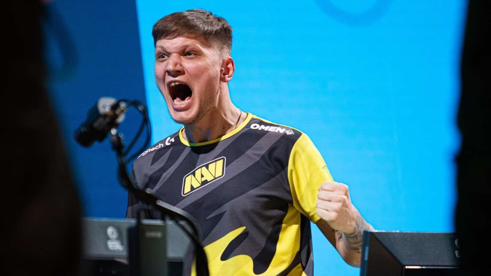
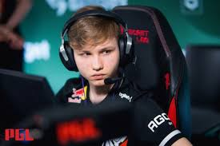
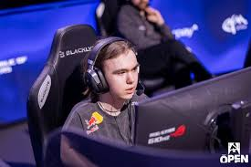

| Nombre | Equipo | Estilo de Juego | Resumen |
|---|---|---|---|
|
Oleksandr "s1mple" Kostyliev  |
Liquid (ex NAVI) | Agresivo, Rifleman, AWP | Considerado uno de los mejores de todos los tiempos. El tipo es una locura con el AWP, tiene una lectura de juego tremenda y te clava jugadas imposibles como si nada. Ganó una banda de MVPs y títulos importantes, un distinto total. |
|
Ilya "m0NESY" Osipov  |
G2 Esports | AWPer, Técnico, Creativo | Joven prodigio ruso considerado uno de los talentos más brillantes del CS2. Su habilidad con el AWP es excepcional, destacándose por su precisión y jugadas creativas. A pesar de su corta edad, ya ha demostrado ser un jugador decisivo en momentos clave. |
|
Danil "donk" Kryshkovets  |
Team Spirit | Agresivo, Entry Fragger, Rifles | Joven talento ruso, un animal lo agresivo que juega. Es un entry fragger tremendo, no le tiene miedo a nada y se manda de una para abrir espacios al equipo. Tiene unos reflejos rapidísimos y es muy picante en los 1vX, por eso es de los más entretenidos de ver. |

Estos tres jugadores han demostrado un nivel de juego superior durante varios años, siendo referencias en el escenario competitivo del Counter. Su impacto en el juego, tanto a nivel individual como en equipo, los ha convertido en íconos del esports.